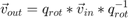

rotate_vector
Rotates a given column of 3D vectors by a (fixed or variable) quaternion

where "*" is a quaternion multiplication, and "^(-1)" indicates the inverse.
Contents
Syntax
vec_out = rotate_vector(vec_in, q_rot)
Input Arguments
- vec_in -- 3D vector
- q_rot -- Quaternion describing the rotation
Output Arguments
- vec_out -- Rotated vector
Notes
Either input can be a simple vector, or a matrix.